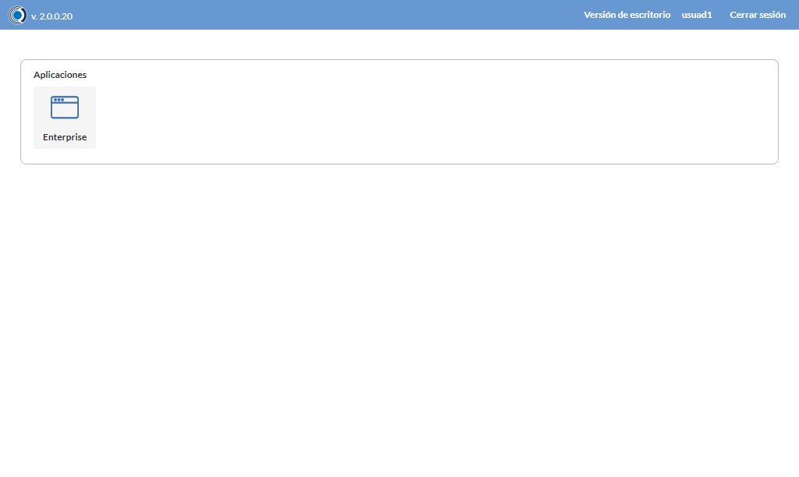
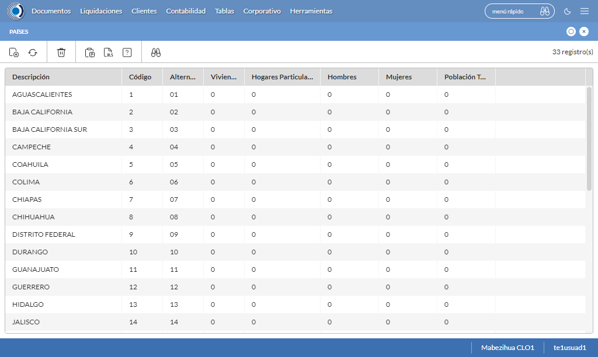
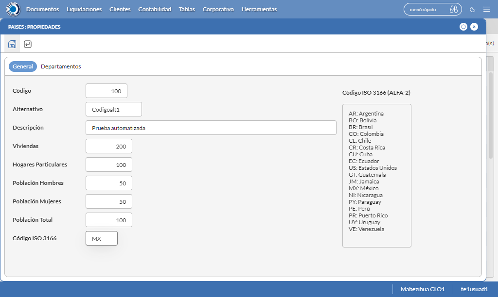
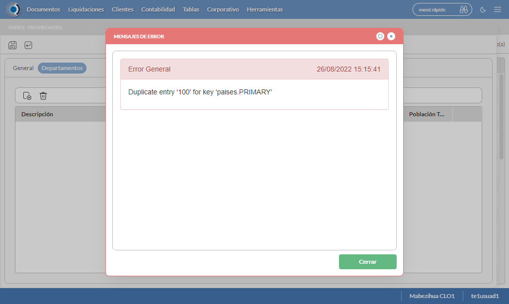
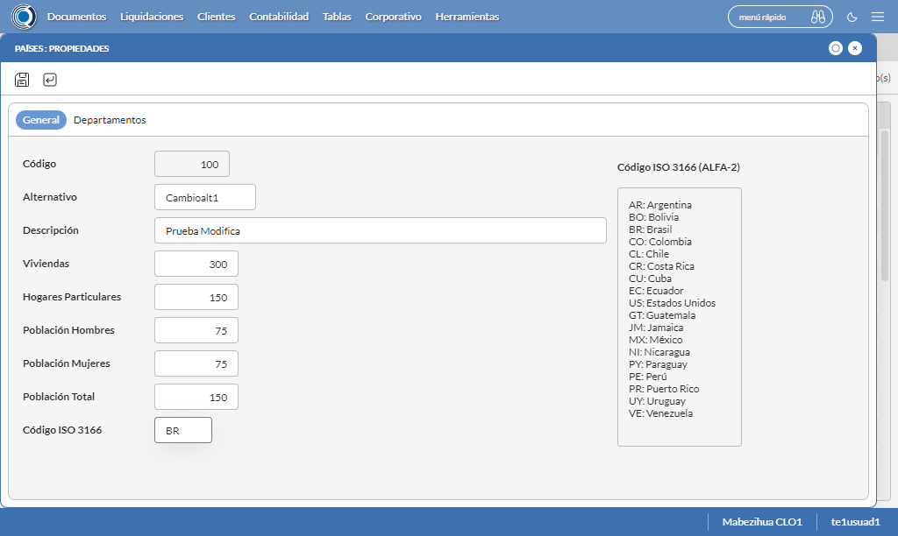
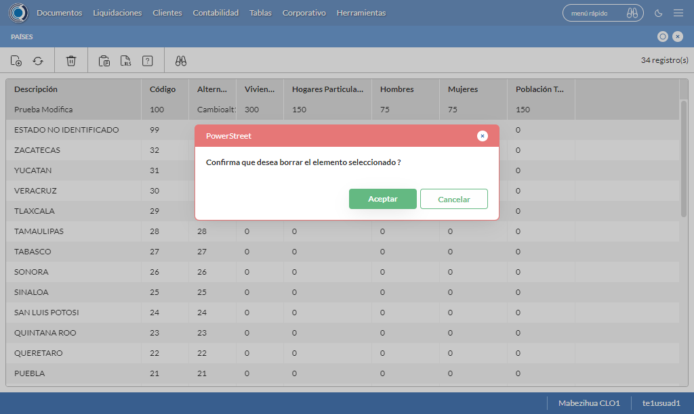

Desarrollado por : Area de Testing PWST
Fecha y hora de inicio : 2022-08-26 10:12:05
Duracion : 0:09:51.020992
Resultado : Total 8，Correctos 8 ，Taza de resultado 100.00%
Resumen 100.00% Errores 0 Fallidos 0 Correctos 8 Test realizados 8
| Caso de Prueba | Total | Correctos | Fallido | Error | Detalles | Captura del error |
| UbicacionesGeograficas.Test: Escenario 1 de Ubicaciones Geograficas | 8 | 8 | 0 | 0 | Detalles | |
test |
pt1_1: 2022-08-26 10:12:07,503 - root - INFO - Se abre el chrome
2022-08-26 10:12:08,751 - root - INFO - Entra a la URL
2022-08-26 10:12:08,893 - root - INFO - Maximiza la pantalla
2022-08-26 10:12:11,948 - root - INFO - Cambia al frame
|
|
||||
test_000: Ingresa a la base de datos |
pt1_2: 2022-08-26 10:12:15,028 - root - INFO - Escribe el usuario
2022-08-26 10:12:15,148 - root - INFO - Escribe la contraseña
2022-08-26 10:12:15,291 - root - INFO - Se dio clic en el boton ingresar
2022-08-26 10:12:16,637 - root - INFO - Ejecutar Enterprise
2022-08-26 10:12:16,638 - root - INFO - Captura: C:\xampp\htdocs\versiones\automatizaciones\AutoPWST\01UG\report\img screen：20220826_10_12_16.png
2022-08-26 10:12:20,863 - root - INFO - Cambia entre pestañas
|
 | ||||
test_001: Abre menu y ejecuta pantalla |
pt1_3: 2022-08-26 10:12:25,977 - root - INFO - Abre el menu completo
2022-08-26 10:12:41,959 - root - INFO - Abre la pantalla de Paises
2022-08-26 10:12:42,033 - root - INFO - La pantalla ejecutada es Paises.
2022-08-26 10:12:42,033 - root - INFO - Captura: C:\xampp\htdocs\versiones\automatizaciones\AutoPWST\01UG\report\img screen：20220826_10_12_42.png
2022-08-26 10:12:42,200 - root - INFO - Se presiona el boton 'Nuevo', para crear un nuevo registro.
|
 | ||||
test_002: Abre la ventana de nuevo y crear un registro |
pt1_4: 2022-08-26 10:12:45,273 - root - INFO - Se abrio la pantalla para el ingreso de un registro nuevo.
2022-08-26 10:12:45,313 - root - INFO - El campo 'Codigo' si se encuentra visible.
2022-08-26 10:12:45,352 - root - INFO - El campo 'Alternativo' si se encuentra visible.
2022-08-26 10:12:45,391 - root - INFO - El campo 'Descrición' si se encuentra visible.
2022-08-26 10:12:45,430 - root - INFO - El campo 'Viviendas' si se encuentra visible.
2022-08-26 10:12:45,470 - root - INFO - El campo 'Hogares Particulares' si se encuentra visible.
2022-08-26 10:12:45,509 - root - INFO - El campo 'Población Hombres' si se encuentra visible.
2022-08-26 10:12:45,548 - root - INFO - El campo 'Población Mujeres' si se encuentra visible.
2022-08-26 10:12:45,586 - root - INFO - El campo 'Población Total' si se encuentra visible.
2022-08-26 10:12:45,640 - root - INFO - El campo 'Código ISO 3166' si se encuentra visible.
2022-08-26 10:12:45,713 - root - INFO - Ingresa el codigo del nuevo registro
2022-08-26 10:12:46,889 - root - INFO - Ingresa el codigo alternativo del nuevo registro
2022-08-26 10:12:48,057 - root - INFO - Ingresa la descripción del nuevo registro
2022-08-26 10:12:49,210 - root - INFO - Ingresa el número de viviendas del nuevo registro
2022-08-26 10:12:50,326 - root - INFO - Ingresa el número de hogares particulares del nuevo registro
2022-08-26 10:12:51,447 - root - INFO - Ingresa el número de Población de hombres del nuevo registro
2022-08-26 10:12:52,556 - root - INFO - Ingresa el número de Población de mujeres del nuevo registro
2022-08-26 10:12:53,688 - root - INFO - Ingresa el número de Población Total del nuevo registro
2022-08-26 10:12:54,811 - root - INFO - Ingresa el Codigo ISO del nuevo registro
2022-08-26 10:12:55,825 - root - INFO - Captura: C:\xampp\htdocs\versiones\automatizaciones\AutoPWST\01UG\report\img screen：20220826_10_12_55.png
2022-08-26 10:13:06,182 - root - INFO - Se hace el cambio de pestaña para continuar con el registro nuevo
2022-08-26 10:13:06,317 - root - INFO - Se presiona el boton 'Nuevo', para crear un nuevo registro.
2022-08-26 10:13:06,874 - root - INFO - El campo 'Codigo' si se encuentra visible.
2022-08-26 10:13:06,912 - root - INFO - El campo 'Alternativo' si se encuentra visible.
2022-08-26 10:13:06,951 - root - INFO - El campo 'Descrición' si se encuentra visible.
2022-08-26 10:13:06,992 - root - INFO - El campo 'Impuesto' si se encuentra visible.
2022-08-26 10:13:07,030 - root - INFO - El campo 'Viviendas' si se encuentra visible.
2022-08-26 10:13:07,070 - root - INFO - El campo 'Hogares Particulares' si se encuentra visible.
2022-08-26 10:13:07,110 - root - INFO - El campo 'Población Hombres' si se encuentra visible.
2022-08-26 10:13:07,150 - root - INFO - El campo 'Población Mujeres' si se encuentra visible.
2022-08-26 10:13:07,207 - root - INFO - El campo 'Población Total' si se encuentra visible.
2022-08-26 10:13:07,293 - root - INFO - Ingresa el codigo del nuevo registro
2022-08-26 10:13:08,456 - root - INFO - Ingresa el codigo alternativo del nuevo registro
2022-08-26 10:13:09,605 - root - INFO - Ingresa la descripción del nuevo registro
2022-08-26 10:13:23,243 - root - INFO - Ingresa el número de viviendas del nuevo registro
2022-08-26 10:13:24,362 - root - INFO - Ingresa el número de hogares particulares del nuevo registro
2022-08-26 10:13:25,493 - root - INFO - Ingresa el número de Población de hombres del nuevo registro
2022-08-26 10:13:26,614 - root - INFO - Ingresa el número de Población de mujeres del nuevo registro
2022-08-26 10:13:27,744 - root - INFO - Ingresa el número de Población Total del nuevo registro
2022-08-26 10:13:28,849 - root - INFO - Se hace el cambio de pestaña para continuar con el registro nuevo
2022-08-26 10:13:29,975 - root - INFO - Se presiona el boton 'Nuevo', para crear un nuevo registro.
2022-08-26 10:13:30,574 - root - INFO - El campo 'Localidad' si se encuentra visible.
2022-08-26 10:13:30,616 - root - INFO - El campo 'Alternativo' si se encuentra visible.
2022-08-26 10:13:30,657 - root - INFO - El campo 'Descrición' si se encuentra visible.
2022-08-26 10:13:30,699 - root - INFO - El campo 'Viviendas' si se encuentra visible.
2022-08-26 10:13:30,741 - root - INFO - El campo 'Hogares Particulares' si se encuentra visible.
2022-08-26 10:13:30,790 - root - INFO - El campo 'Población Hombres' si se encuentra visible.
2022-08-26 10:13:30,839 - root - INFO - El campo 'Población Mujeres' si se encuentra visible.
2022-08-26 10:13:30,879 - root - INFO - El campo 'Población Total' si se encuentra visible.
2022-08-26 10:13:30,977 - root - INFO - Ingresa el codigo del nuevo registro
2022-08-26 10:13:32,136 - root - INFO - Ingresa el codigo alternativo del nuevo registro
2022-08-26 10:13:33,288 - root - INFO - Ingresa la descripción del nuevo registro
2022-08-26 10:13:34,410 - root - INFO - Ingresa el número de viviendas del nuevo registro
2022-08-26 10:13:35,581 - root - INFO - Ingresa el número de hogares particulares del nuevo registro
2022-08-26 10:13:36,694 - root - INFO - Ingresa el número de Población de hombres del nuevo registro
2022-08-26 10:13:37,830 - root - INFO - Ingresa el número de Población de mujeres del nuevo registro
2022-08-26 10:13:38,967 - root - INFO - Ingresa el número de Población Total del nuevo registro
2022-08-26 10:13:40,103 - root - INFO - Se hace el cambio de pestaña para continuar con el registro nuevo
2022-08-26 10:13:43,238 - root - INFO - Se presiona el boton 'Nuevo', para crear un nuevo registro.
2022-08-26 10:13:43,792 - root - INFO - El campo 'Código' si se encuentra visible.
2022-08-26 10:13:43,831 - root - INFO - El campo 'Alternativo' si se encuentra visible.
2022-08-26 10:13:43,870 - root - INFO - El campo 'Descrición' si se encuentra visible.
2022-08-26 10:13:43,908 - root - INFO - El campo 'Viviendas' si se encuentra visible.
2022-08-26 10:13:43,947 - root - INFO - El campo 'Hogares Particulares' si se encuentra visible.
2022-08-26 10:13:43,987 - root - INFO - El campo 'Población Hombres' si se encuentra visible.
2022-08-26 10:13:44,024 - root - INFO - El campo 'Población Mujeres' si se encuentra visible.
2022-08-26 10:13:44,063 - root - INFO - El campo 'Población Total' si se encuentra visible.
2022-08-26 10:13:44,173 - root - INFO - Ingresa el codigo del nuevo registro
2022-08-26 10:13:45,333 - root - INFO - Ingresa el codigo alternativo del nuevo registro
2022-08-26 10:13:46,482 - root - INFO - Ingresa la descripción del nuevo registro
2022-08-26 10:13:47,633 - root - INFO - Ingresa el número de viviendas del nuevo registro
2022-08-26 10:13:48,759 - root - INFO - Ingresa el número de hogares particulares del nuevo registro
2022-08-26 10:13:49,882 - root - INFO - Ingresa el número de Población de hombres del nuevo registro
2022-08-26 10:13:51,001 - root - INFO - Ingresa el número de Población de mujeres del nuevo registro
2022-08-26 10:13:52,115 - root - INFO - Ingresa el número de Población Total del nuevo registro
2022-08-26 10:13:53,252 - root - INFO - Se da clic en el boton Guardar; se debe crear un nuevo registro.
2022-08-26 10:13:58,384 - root - INFO - Se da clic en el boton Guardar; se debe crear un nuevo registro.
2022-08-26 10:14:03,524 - root - INFO - Se hace el cambio de pestaña para continuar con el registro nuevo
2022-08-26 10:14:06,674 - root - INFO - Se presiona el boton 'Nuevo', para crear un nuevo registro.
2022-08-26 10:14:07,269 - root - INFO - El campo 'Artículo' si se encuentra visible.
2022-08-26 10:14:07,307 - root - INFO - El campo 'Impuesto' si se encuentra visible.
2022-08-26 10:14:52,413 - root - INFO - Se da clic en el boton Guardar; se debe crear un nuevo registro.
2022-08-26 10:14:57,534 - root - INFO - Se da clic en el boton Guardar; se debe crear un nuevo registro.
2022-08-26 10:15:02,679 - root - INFO - Se da clic en el boton Guardar; se debe crear un nuevo registro.
|
 | ||||
test_003: Repetir el registro creado anteriormente |
pt1_5: 2022-08-26 10:15:07,838 - root - INFO - Se presiona el boton 'Refrescar', para crear un nuevo registro igual al anterior.
2022-08-26 10:15:12,950 - root - INFO - Se presiona el boton 'Nuevo', para crear un nuevo registro igual al anterior.
2022-08-26 10:15:18,061 - root - INFO - Ingresa el codigo del nuevo registro
2022-08-26 10:15:19,200 - root - INFO - Ingresa el codigo alternativo del nuevo registro
2022-08-26 10:15:20,371 - root - INFO - Ingresa la descripción del nuevo registro
2022-08-26 10:15:21,486 - root - INFO - Ingresa el número de viviendas del nuevo registro
2022-08-26 10:15:22,616 - root - INFO - Ingresa el número de hogares particulares del nuevo registro
2022-08-26 10:15:23,782 - root - INFO - Ingresa el número de Población de hombres del nuevo registro
2022-08-26 10:15:24,933 - root - INFO - Ingresa el número de Población de mujeres del nuevo registro
2022-08-26 10:15:26,041 - root - INFO - Ingresa el número de Población Total del nuevo registro
2022-08-26 10:15:27,168 - root - INFO - Ingresa el Codigo ISO del nuevo registro
2022-08-26 10:15:30,180 - root - INFO - Captura: C:\xampp\htdocs\versiones\automatizaciones\AutoPWST\01UG\report\img screen：20220826_10_15_30.png
2022-08-26 10:15:40,530 - root - INFO - Se hace el cambio de pestaña para continuar con el registro nuevo
2022-08-26 10:15:40,647 - root - INFO - Se da clic en el boton Guardar; se debe crear un nuevo registro.
2022-08-26 10:15:45,658 - root - INFO - Captura: C:\xampp\htdocs\versiones\automatizaciones\AutoPWST\01UG\report\img screen：20220826_10_15_45.png
2022-08-26 10:15:45,865 - root - INFO - Se presiona el boton 'Cerrar', para cerrar el mensaje de duplicidad de llave primaria
2022-08-26 10:15:50,987 - root - INFO - Se presiona el boton 'Cerrar', para cerrar la ventana
|
 | ||||
test_004: Modificar el registro |
pt1_6: 2022-08-26 10:15:55,121 - root - INFO - Se presiona el boton 'Refrescar', para crear un nuevo registro igual al anterior.
2022-08-26 10:16:11,405 - root - INFO - Se presiona el boton 'Codigo', para buscar un nuevo registro y poder modificarlo.
2022-08-26 10:16:16,068 - root - INFO - Se da clic en el registro creado, para proceder a modificarlo.
2022-08-26 10:16:16,244 - root - INFO - Ingresa el codigo alternativo del nuevo registro
2022-08-26 10:16:19,428 - root - INFO - Ingresa la descripción del nuevo registro
2022-08-26 10:16:22,582 - root - INFO - Ingresa el número de viviendas del nuevo registro
2022-08-26 10:16:25,731 - root - INFO - Ingresa el número de hogares particulares del nuevo registro
2022-08-26 10:16:28,873 - root - INFO - Ingresa el número de Población de hombres del nuevo registro
2022-08-26 10:16:32,025 - root - INFO - Ingresa el número de Población de mujeres del nuevo registro
2022-08-26 10:16:35,173 - root - INFO - Ingresa el número de Población Total del nuevo registro
2022-08-26 10:16:38,349 - root - INFO - Ingresa el Codigo ISO del nuevo registro
2022-08-26 10:16:41,363 - root - INFO - Captura: C:\xampp\htdocs\versiones\automatizaciones\AutoPWST\01UG\report\img screen：20220826_10_16_41.png
2022-08-26 10:16:51,692 - root - INFO - Se hace el cambio de pestaña para continuar con el registro nuevo
2022-08-26 10:16:56,395 - root - INFO - Se da clic en el registro creado, para proceder a modificarlo.
2022-08-26 10:16:56,572 - root - INFO - Ingresa el codigo alternativo del nuevo registro
2022-08-26 10:16:59,758 - root - INFO - Ingresa la descripción del nuevo registro
2022-08-26 10:17:15,400 - root - INFO - Ingresa el número de viviendas del nuevo registro
2022-08-26 10:17:18,560 - root - INFO - Ingresa el número de hogares particulares del nuevo registro
2022-08-26 10:17:21,723 - root - INFO - Ingresa el número de Población de hombres del nuevo registro
2022-08-26 10:17:24,877 - root - INFO - Ingresa el número de Población de mujeres del nuevo registro
2022-08-26 10:17:28,029 - root - INFO - Ingresa el número de Población Total del nuevo registro
2022-08-26 10:17:31,159 - root - INFO - Se hace el cambio de pestaña para continuar con el registro nuevo
2022-08-26 10:17:38,827 - root - INFO - Se da clic en el registro creado, para proceder a modificarlo.
2022-08-26 10:17:39,039 - root - INFO - Ingresa el codigo alternativo del nuevo registro
2022-08-26 10:17:42,219 - root - INFO - Ingresa la descripción del nuevo registro
2022-08-26 10:17:45,382 - root - INFO - Ingresa el número de viviendas del nuevo registro
2022-08-26 10:17:48,549 - root - INFO - Ingresa el número de hogares particulares del nuevo registro
2022-08-26 10:17:51,689 - root - INFO - Ingresa el número de Población de hombres del nuevo registro
2022-08-26 10:17:54,832 - root - INFO - Ingresa el número de Población de mujeres del nuevo registro
2022-08-26 10:17:57,985 - root - INFO - Ingresa el número de Población Total del nuevo registro
2022-08-26 10:18:01,126 - root - INFO - Se hace el cambio de pestaña para continuar con el registro nuevo
2022-08-26 10:18:08,819 - root - INFO - Se da clic en el registro creado, para proceder a modificarlo.
2022-08-26 10:18:09,026 - root - INFO - Ingresa el codigo alternativo del nuevo registro
2022-08-26 10:18:12,198 - root - INFO - Ingresa la descripción del nuevo registro
2022-08-26 10:18:15,357 - root - INFO - Ingresa el número de viviendas del nuevo registro
2022-08-26 10:18:18,532 - root - INFO - Ingresa el número de hogares particulares del nuevo registro
2022-08-26 10:18:21,688 - root - INFO - Ingresa el número de Población de hombres del nuevo registro
2022-08-26 10:18:24,837 - root - INFO - Ingresa el número de Población de mujeres del nuevo registro
2022-08-26 10:18:27,990 - root - INFO - Ingresa el número de Población Total del nuevo registro
2022-08-26 10:18:31,116 - root - INFO - Se da clic en el boton Guardar; se debe crear un nuevo registro.
2022-08-26 10:18:34,229 - root - INFO - Se da clic en el boton Guardar; se debe crear un nuevo registro.
2022-08-26 10:18:39,341 - root - INFO - Se hace el cambio de pestaña para continuar con el registro nuevo
2022-08-26 10:18:46,995 - root - INFO - Se da clic en el registro creado, para proceder a modificarlo.
2022-08-26 10:19:22,156 - root - INFO - Se da clic en el boton Guardar; se debe crear un nuevo registro.
2022-08-26 10:19:25,274 - root - INFO - Se da clic en el boton Guardar; se debe crear un nuevo registro.
2022-08-26 10:19:28,404 - root - INFO - Se da clic en el boton Guardar; se debe modificar la informacion del registro.
|
 | ||||
test_005: Eliminar el registro creado |
pt1_7: 2022-08-26 10:19:31,551 - root - INFO - Se presiona el boton 'Refrescar', para proceder a eliminar el registro.
2022-08-26 10:19:49,214 - root - INFO - Se da clic en el registro creado, para proceder a eliminarlo.
2022-08-26 10:19:55,332 - root - INFO - Se hace el cambio de pestaña para continuar con el registro nuevo
2022-08-26 10:19:59,964 - root - INFO - Se da clic en el registro creado, para proceder a modificarlo.
2022-08-26 10:20:00,083 - root - INFO - Se hace el cambio de pestaña para continuar con el registro nuevo
2022-08-26 10:20:07,758 - root - INFO - Se da clic en el registro creado, para proceder a modificarlo.
2022-08-26 10:20:07,904 - root - INFO - Se hace el cambio de pestaña para continuar con el registro nuevo
2022-08-26 10:20:15,553 - root - INFO - Se da clic en el registro creado, para proceder a modificarlo.
2022-08-26 10:20:15,712 - root - INFO - Se presiona el boton 'Eliminar', para eliminar el registro.
2022-08-26 10:20:18,854 - root - INFO - Se da clic en el boton Guardar; se debe crear un nuevo registro.
2022-08-26 10:20:23,979 - root - INFO - Se da clic en el boton Guardar; se debe crear un nuevo registro.
2022-08-26 10:20:27,120 - root - INFO - Se da clic en el boton Guardar; se debe modificar la informacion del registro.
2022-08-26 10:20:34,819 - root - INFO - Se da clic en el registro creado, para proceder a eliminarlo.
2022-08-26 10:20:37,947 - root - INFO - Se hace el cambio de pestaña para continuar con el registro nuevo
2022-08-26 10:20:42,575 - root - INFO - Se da clic en el registro creado, para proceder a modificarlo.
2022-08-26 10:20:42,687 - root - INFO - Se hace el cambio de pestaña para continuar con el registro nuevo
2022-08-26 10:20:50,284 - root - INFO - Se da clic en el registro creado, para proceder a modificarlo.
2022-08-26 10:20:50,402 - root - INFO - Se presiona el boton 'Eliminar', para eliminar el registro.
2022-08-26 10:20:55,553 - root - INFO - Se da clic en el boton Guardar; se debe crear un nuevo registro.
2022-08-26 10:20:58,652 - root - INFO - Se da clic en el boton Guardar; se debe modificar la informacion del registro.
2022-08-26 10:21:06,307 - root - INFO - Se da clic en el registro creado, para proceder a eliminarlo.
2022-08-26 10:21:09,460 - root - INFO - Se hace el cambio de pestaña para continuar con el registro nuevo
2022-08-26 10:21:14,072 - root - INFO - Se da clic en el registro creado, para proceder a modificarlo.
2022-08-26 10:21:14,194 - root - INFO - Se presiona el boton 'Eliminar', para eliminar el registro.
2022-08-26 10:21:19,375 - root - INFO - Se da clic en el boton Guardar; se debe modificar la informacion del registro.
2022-08-26 10:21:26,988 - root - INFO - Se da clic en el registro creado, para proceder a eliminarlo.
2022-08-26 10:21:27,131 - root - INFO - Se presiona el boton 'Eliminar', para eliminar el registro.
2022-08-26 10:21:34,145 - root - INFO - Captura: C:\xampp\htdocs\versiones\automatizaciones\AutoPWST\01UG\report\img screen：20220826_10_21_34.png
2022-08-26 10:21:34,351 - root - INFO - Se confirma el eliminado del registro
2022-08-26 10:21:44,468 - root - INFO - Se presiona el boton 'Refrescar', para crear un nuevo registro igual al anterior.
2022-08-26 10:21:52,569 - root - INFO - Se presiona el boton 'Cerrar', para cerrar la pantalla de Categorias Fiscales.
|
 | ||||
test_006: Cerrar_Navegador |
pt1_8: 2022-08-26 10:21:56,856 - root - INFO - Se cierra chrome
|
|
||||
| Caso de prueba | 8 | 8 | 0 | 0 | Taza de resultado：100.00% | |